Welcome to Lakeview Junior High School...
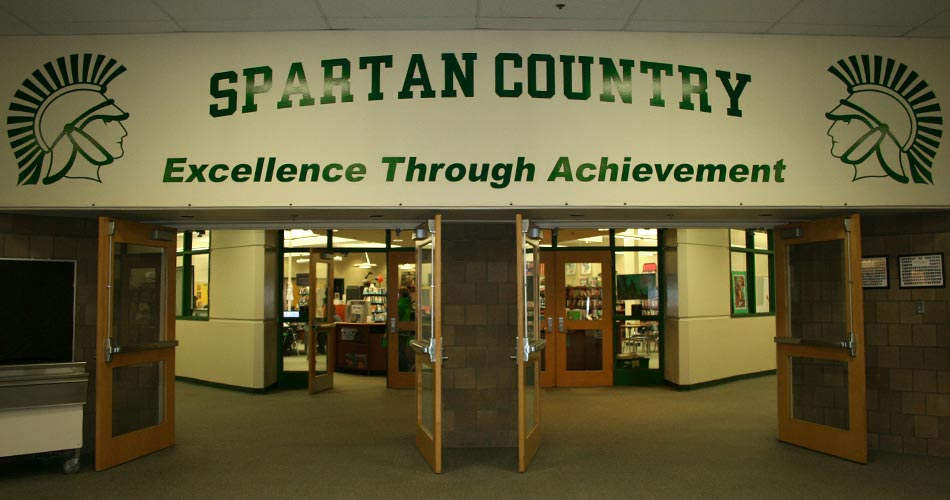
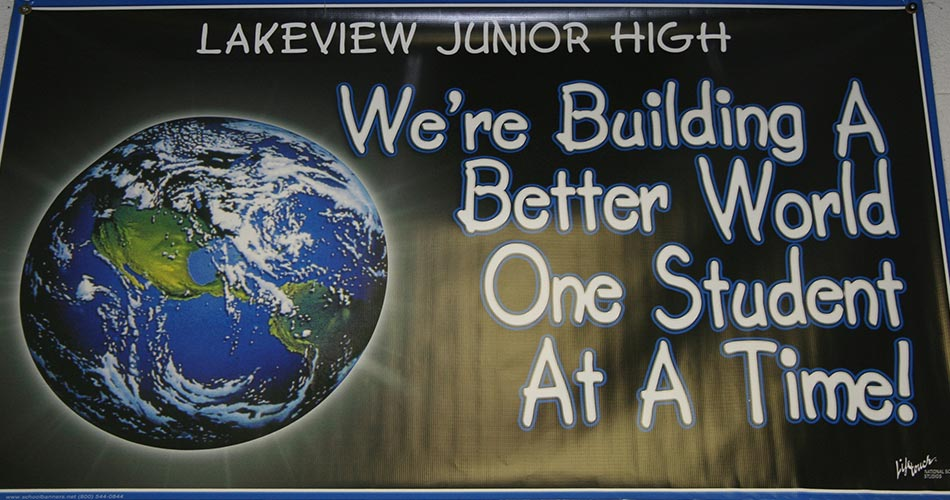
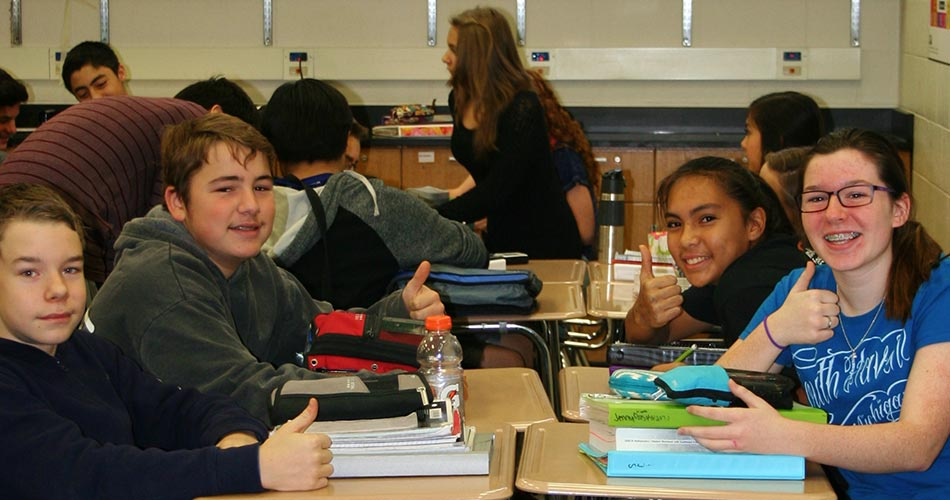
STEM at Lakeview Junior High...
Esther, an 8th grader, has had 3 years of STEM lab experience and likes the reinforcement of concepts in two different classes. Esther says, "I find it really nice—STEM lab helps you within your math class doing the same things—the teachers talk as a team—we’re doing slope in math class and slope in STEM. Two different teachers teaching it two different ways, so you get two different perspectives for learning."
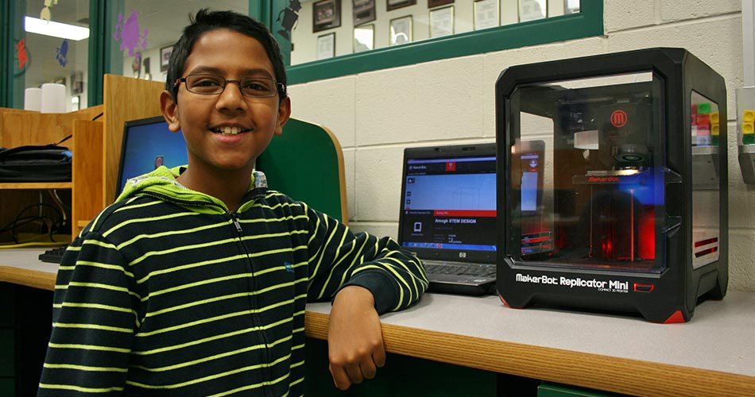
Amogh is making a model of a phone on the 3D printer in the STEM Lab. He explains that the printer allows people with limited resources to have opportunities for designing and prototyping. About His plans for the future, Amogh says, “I want to go to MIT or Stanford and be the CEO of Apple when I grow up.”
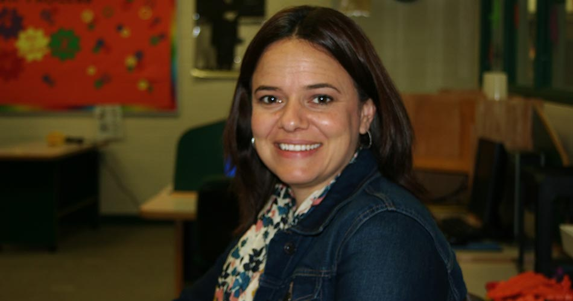
Teacher Erika Myers says, "Within this technological world, it is essential for our students to develop skills which will allow them to collaborate, problem solve and innovate. STEM education gives students the opportunity to develop these skills while fueling an interest in math and science."
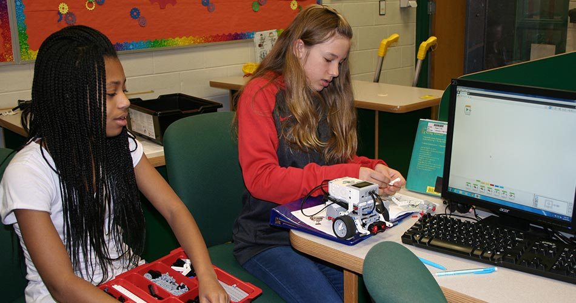
Britta and Adriana, 7th graders, are refining the sensors on their robot.
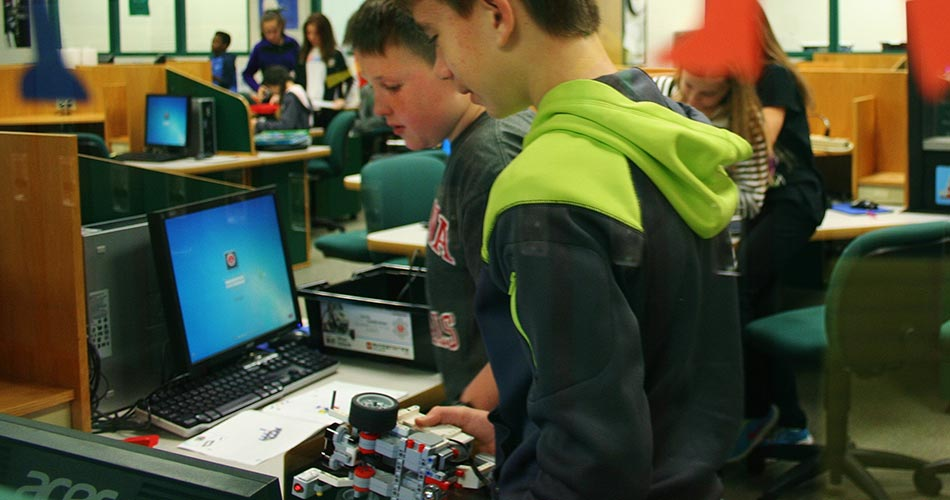
Nick and Stephan booting up their computer in the STEM lab.
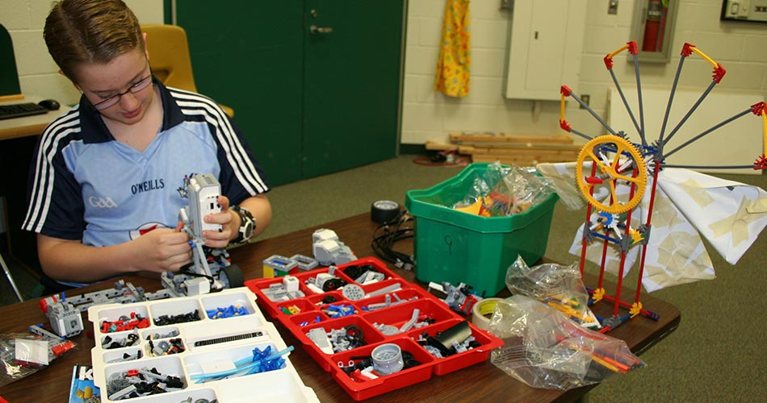
Sean enjoys “taking stuff apart and putting it back together” and says “I might want to be an electrical engineer.”
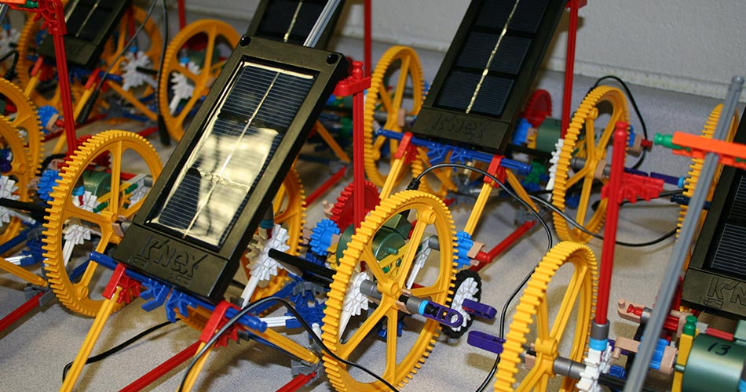
What are students working on in the STEM Lab at Lakeview Junior High?
Check out Mrs. Myers’ STEM Class blog for details and inspiration http://myersstem.wordpress.com/
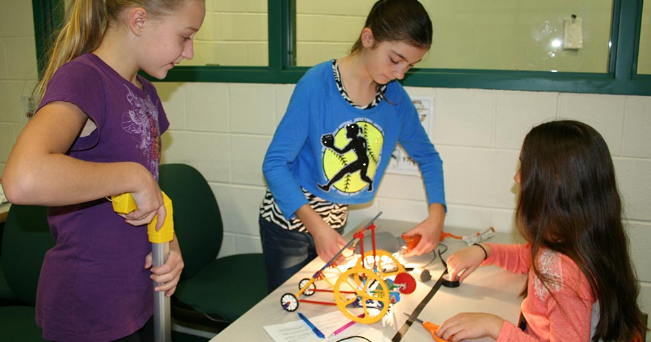
Anastasia, Jordyn, and Gabi are getting ready to do some testing of their solar vehicle.
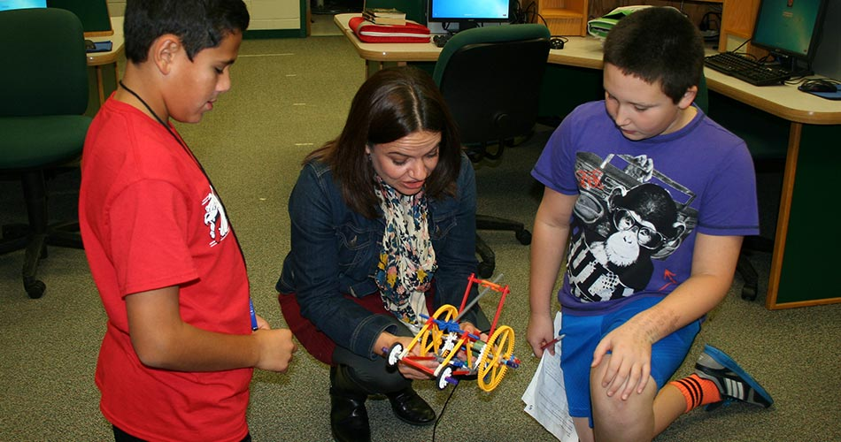
Ms. Myers gives some technical support to Noah and Dominick.
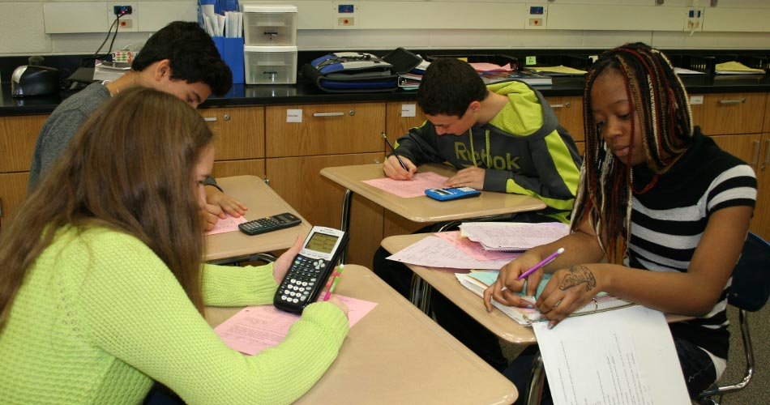
“Calculating” 8th graders! Jake, Kelly, Trish and Max are collaborating to analyze their lab data.
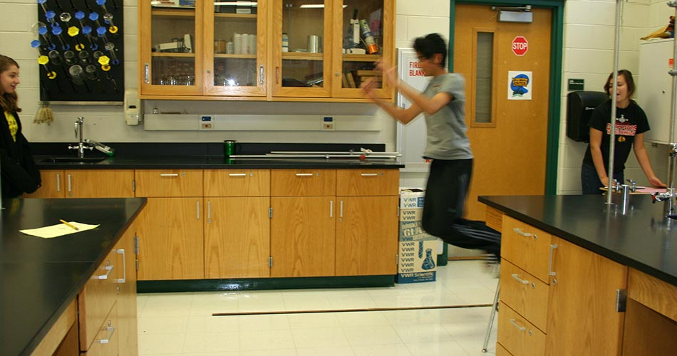
Kaitlin, Sushant and Samantha—experiment in progress!
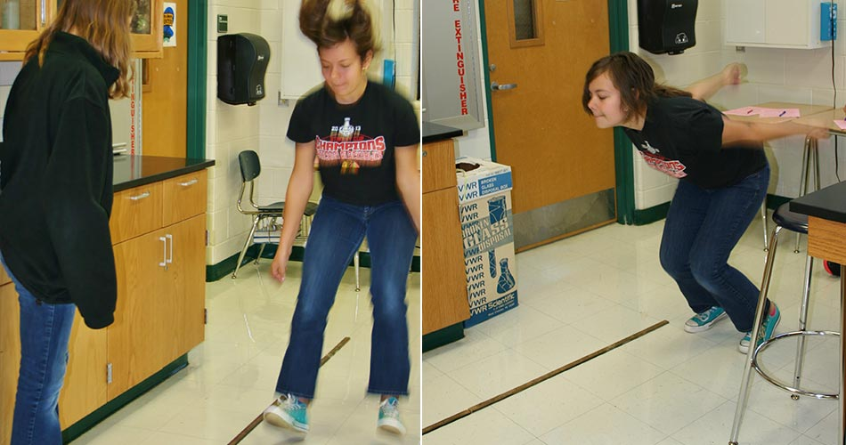
Samantha jumps while Kaitlin measures - then Samantha is generating more data.
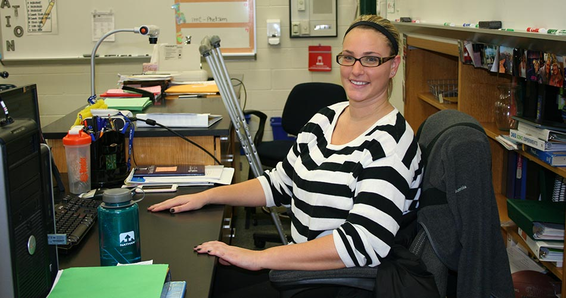
Real-life physical science; note Ms. Schwenkel’s crutches in the background!
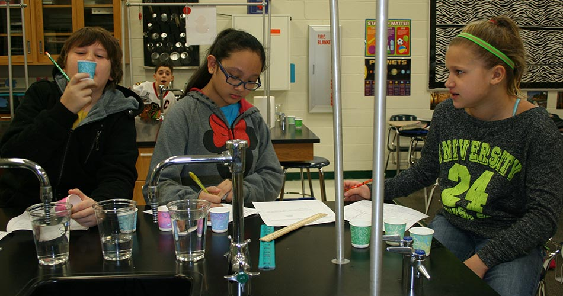
Anthony, Bianca and Sarah are making qualitative observations to distinguish liquids.
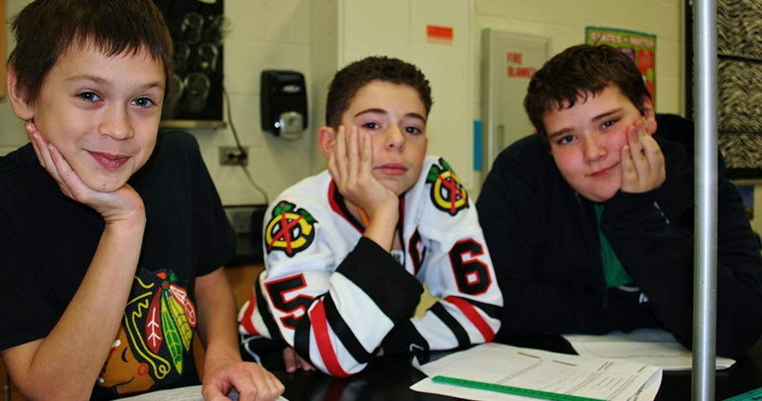
Mickey, Matthew and Brian pose for the photographer!
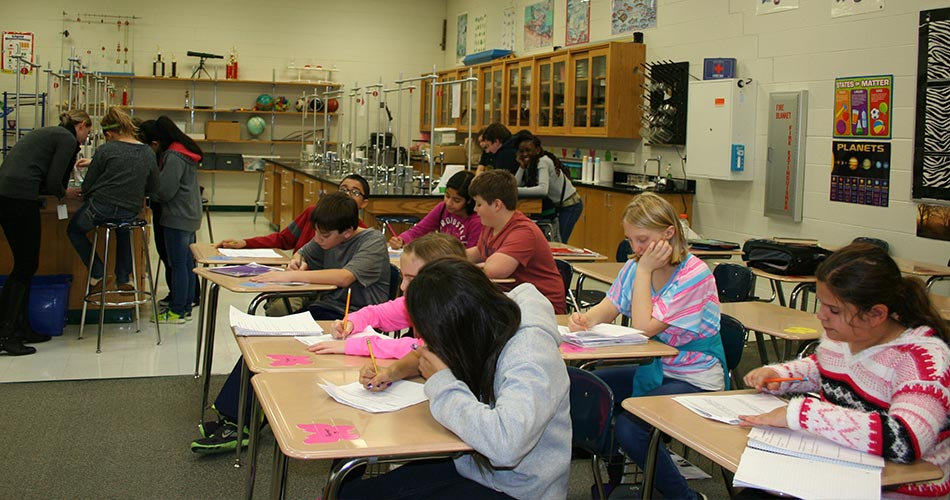
Sixth graders hard at work in Ms. Everaert’s life science lab.
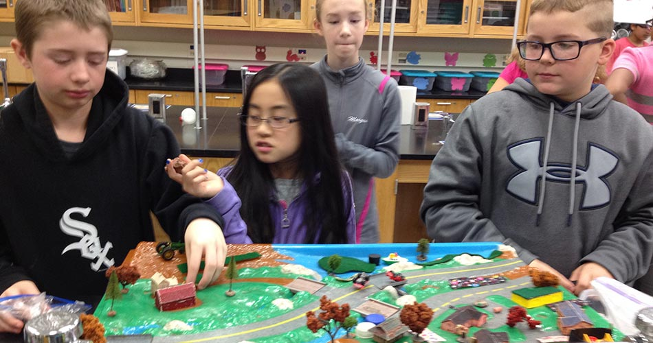
These 6th graders are learning to protect our watersheds.
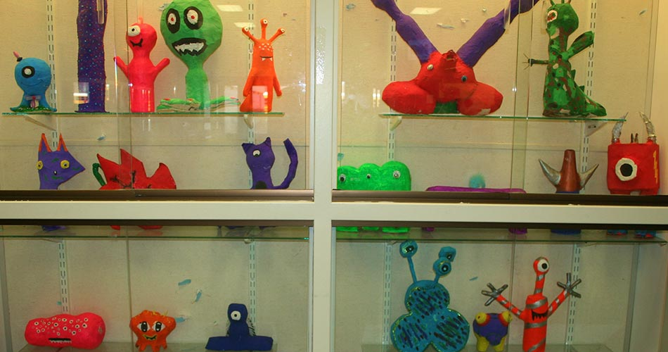
You’ll find a wide range of creative accomplishments at Lakeview!